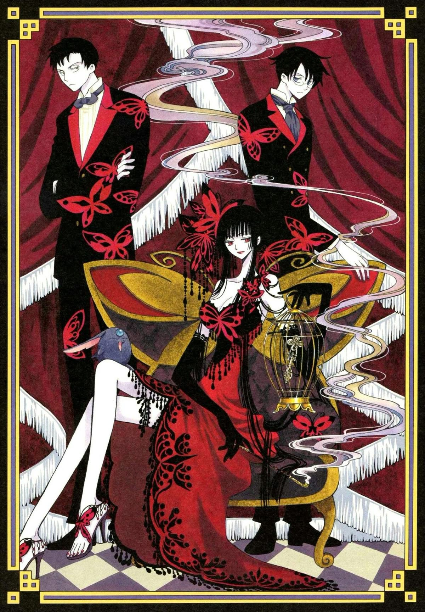

XXXHolic
Thể loại: Bí ẩn, Đời thường
Mô tả:
xxxHolic là một bộ siêu nhiên tâm linh triết lý đời thường của CLAMP, xoay quanh nhân quả, điều ước và cái giá phải trả. Truyện mang không khí huyền bí, chậm rãi, pha chút u ám nhưng rất tinh tế, tập trung vào những câu chuyện nhỏ phản chiếu ham muốn và lựa chọn của con người.
Tóm tắt cốt truyện:
Kimihiro Watanuki là một học sinh có khả năng nhìn thấy linh hồn và yêu quái, khiến cuộc sống của cậu luôn bị quấy nhiễu. Trong một lần tình cờ, Watanuki bước vào cửa hàng của Yuuko Ichihara — một người phụ nữ bí ẩn có thể thực hiện mọi điều ước. Đổi lại việc được Yuuko giúp thoát khỏi năng lực phiền phức này, Watanuki phải làm việc tại cửa hàng của cô. Thông qua những vị khách tìm đến để thực hiện điều ước, Watanuki dần chứng kiến nhiều câu chuyện liên quan đến tham vọng, hối hận và luật nhân quả. Qua đó, cậu học cách hiểu bản thân, chấp nhận số phận và trưởng thành hơn. xxxHolic không chỉ là những hiện tượng siêu nhiên, mà còn là chuỗi câu chuyện mang ý nghĩa sâu sắc về sự lựa chọn và hậu quả.
Bình luận
Vui lòng đăng nhập để bình luận.